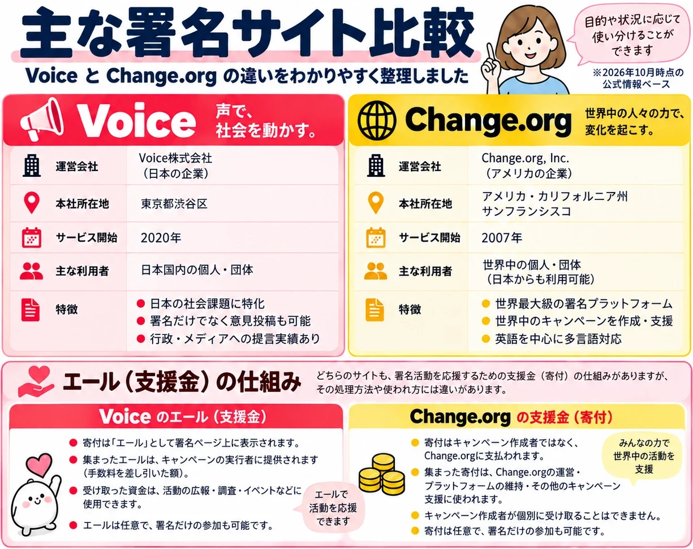

← 署名の一覧（署名掲示板）
署名サイトの違い
このページに載せている署名は、Voice と change.org の2つのサイトのものです。
どちらも「ネットで署名を集めるサイト」ですが、運営している会社や、お金（支援金）の使われ方が違います。
※2026年10月時点の、各サイトの公式情報をもとにまとめています。

図を押すと大きく表示されます。下に同じ内容を文章でも書いています。
ひと目でわかる違い
📣 Voice声で、社会を動かす。
- 運営会社
- Voice株式会社（日本の会社）
- 本社
- 東京都渋谷区
- サービス開始
- 2020年
- 主に使っている人
- 日本国内の個人・団体
- 特徴
- 日本の社会の問題に特化
- 署名だけでなく、意見の投稿もできる
- 役所やメディアに届けた実績がある
🌐 change.org世界中の人々の力で、変化を起こす。
- 運営会社
- Change.org, Inc.（アメリカの会社）
- 本社
- アメリカ・カリフォルニア州サンフランシスコ
- サービス開始
- 2007年
- 主に使っている人
- 世界中の個人・団体（日本からも使えます）
- 特徴
- 世界最大級の署名サイト
- 世界中の署名活動を作ったり、応援したりできる
- 英語を中心に、いろいろな言語に対応
💗 支援金（お金での応援）の違い
どちらのサイトも、署名のあとに「お金で応援しませんか」という画面が出ることがあります。お金を払わなくても、署名だけで参加できます。ただし、払ったお金の行き先が違います。
Voice の「エール」
- 寄付は「エール」として署名ページに表示されます。
- 集まったエールは、署名を始めた人（発起人）に届きます（手数料を引いた額）。
- 受け取ったお金は、活動の宣伝・調査・イベントなどに使えます。
- エールは任意で、署名だけの参加もできます。
change.org の支援金（寄付）
- お金は署名を始めた人ではなく、change.org（運営会社）に支払われます。
- 集まったお金は、change.org の運営や、ほかのキャンペーンの応援に使われます。
- 署名を始めた人が、個別に受け取ることはできません。
- 寄付は任意で、署名だけの参加もできます。
✅ 署名するときのポイント
- お金を払わなくても署名は有効です。支払い画面が出ても、そのまま閉じてかまいません。
- 「署名を始めた人を直接応援したい」なら、change.org の支援金ではその人には届かない点に注意しましょう。
- どちらのサイトでも、署名する前に概要と発起人を確かめて、ご自身で判断してください。
← 署名の一覧にもどる